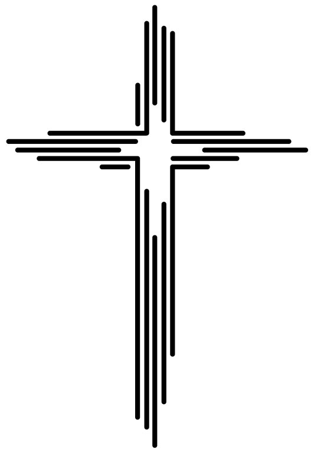

Willkommen!
Herzlich willkommen auf meiner Seite für den Religionsunterricht! Hier findest du Unterrichtsmaterialien, kreative Ideen und Tipps rund um den Religionsunterricht in Schule und Gemeinde.
Materialien
- Arbeitsblätter zu biblischen Themen
- Impulse für den Ethik- und Werteunterricht
- Projektideen für Feiertage und Feste
Ideen & Anregungen
Ob Advent, Ostern oder Themen wie „Schöpfung“ oder „Nächstenliebe“ – hier findest du inspirierende Anregungen für kreative und tiefgehende Stunden.
Kontakt
Hast du eigene Ideen oder möchtest Material teilen? Schreib mir an info@religionsunterricht.de.
Biblische Symbole
Das Kreuz ist eines der wichtigsten Symbole im Christentum.